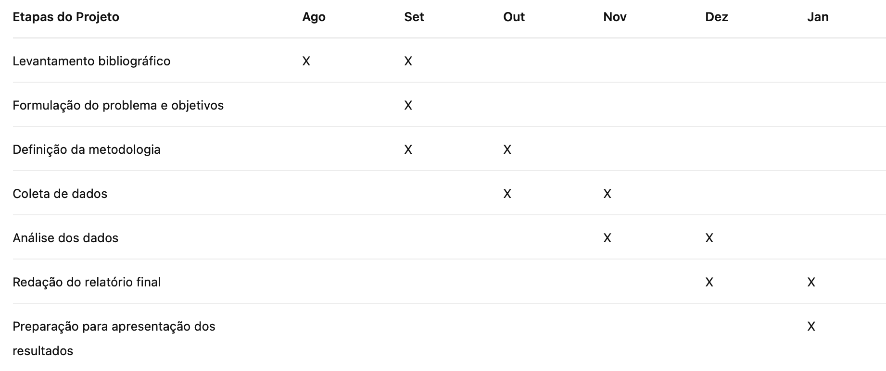

17 Como descrever o passo a passo de uma pesquisa
Roteiro de aula elaborado no RStudio com o auxílio da inteligência artificial, revisado e avaliado pelo autor antes de sua publicação.
17.1 Objetivo de aprendizagem
Ao final desta aula, espera-se que você seja capaz de:
- descrever, com clareza e coerência, o percurso metodológico de uma pesquisa, articulando problema, objetivo, tipo de pesquisa, fontes de informação, procedimentos de coleta/seleção de dados, procedimentos de análise e cronograma de execução.
Leitura indicada
GIL, Antonio Carlos. Como elaborar projetos de pesquisa. Rio de Janeiro: Atlas, 2022.
17.2 Leitura em foco
Conforme Antonio Carlos Gil, a seção Metodologia do projeto de pesquisa apresenta o planejamento da investigação. Nessa seção, deve-se esclarecer como a pesquisa será realizada, quais procedimentos serão adotados e de que modo esses procedimentos permitirão alcançar os objetivos propostos.
A elaboração da metodologia depende de decisões anteriores. Para escrever essa seção, é necessário ter clareza sobre o problema de pesquisa, o objetivo, o referencial teórico, o objeto de investigação e os dados que serão utilizados.
A metodologia não deve apenas mencionar técnicas. Ela deve justificar as escolhas feitas, mostrando coerência entre:
problema de pesquisa → objetivo → dados → procedimentos de coleta ou seleção → procedimentos de análise
Ideia central
A metodologia responde à pergunta:
Como a pesquisa será realizada para responder ao problema proposto?
Área do conhecimento da pesquisa
Antes de definir a metodologia, é útil identificar em qual área do conhecimento sua pesquisa se enquadra. Essa classificação ajuda a situar o estudo em uma tradição científica específica, facilita a escolha de referenciais teóricos e metodológicos adequados e favorece a comunicação dos resultados com a comunidade acadêmica da área.
O Conselho Nacional de Desenvolvimento Científico e Tecnológico (CNPq) disponibiliza uma árvore de áreas, subáreas e especialidades que pode auxiliar nessa identificação. Consulte: https://lattes.cnpq.br/web/dgp/arvore-do-conhecimento.
Embora pesquisas interdisciplinares possam dialogar com mais de uma área, é recomendável indicar aquela que melhor representa o foco principal da investigação.
O que uma metodologia precisa explicitar?
A metodologia deve apresentar as principais decisões da pesquisa. Em um projeto inicial, essas decisões ainda podem ser aperfeiçoadas, mas precisam estar suficientemente claras para que o leitor compreenda o caminho previsto.
| Elemento | Pergunta que deve ser respondida |
|---|---|
| Tipo de pesquisa | Que tipo de investigação será realizada? |
| Abordagem | A pesquisa será qualitativa, quantitativa ou mista? |
| Fonte dos dados | De onde virão as informações analisadas? |
| Objeto, corpus ou participantes | O que ou quem será analisado? |
| Procedimentos de coleta ou seleção | Como os dados serão obtidos ou escolhidos? |
| Procedimentos de análise | Como os dados serão examinados? |
| Coerência metodológica | Como esses procedimentos ajudam a responder à pergunta de pesquisa? |
A metodologia é o passo a passo justificado da pesquisa. Ela deve permitir que o leitor compreenda o percurso previsto e avalie se ele é coerente com o problema e com os objetivos.
17.3 Aprendizagem prática
As perguntas abaixo servem para ajudar você a tomar decisões metodológicas. Elas não produzem automaticamente uma metodologia pronta, mas ajudam a construir um mapa metodológico inicial para o seu projeto.
Perguntas orientadoras sobre a metodologia
Pesquisa básica e pesquisa aplicada
As pesquisas podem ser classificadas de acordo com a contribuição que pretendem trazer.
- Pesquisa básica: procura ampliar o conhecimento sobre um tema ou fenômeno, ajudando a compreender melhor como ele funciona.
Exemplo: investigar como estudantes desenvolvem a competência argumentativa ao longo da graduação.
- Pesquisa aplicada: procura usar o conhecimento científico para resolver um problema ou melhorar uma prática, produto, serviço ou processo.
Exemplo: desenvolver e avaliar uma ferramenta digital para apoiar a escrita acadêmica de estudantes universitários.
Abordagem quantitativa, qualitativa e mista
- Abordagem quantitativa: trabalha com dados expressos em números, medidas ou quantidades, geralmente analisados por meio de tabelas, gráficos e procedimentos estatísticos.
Exemplo: idade dos participantes, notas, frequência de uso de um aplicativo ou respostas a questionários fechados.
- Abordagem qualitativa: trabalha com dados verbais, visuais, documentais ou descritivos, com o objetivo de compreender significados, práticas, experiências ou interpretações.
Exemplo: entrevistas, respostas abertas, diários, documentos, textos ou observações.
- Abordagem mista: combina dados quantitativos e qualitativos para compreender melhor o fenômeno estudado.
Exemplo: aplicar um questionário com questões fechadas e abertas aos mesmos participantes.
Pesquisas com intervenção e pesquisas sem intervenção
- Pesquisa experimental ou com intervenção: o pesquisador modifica uma condição, aplica um procedimento ou introduz uma intervenção para verificar possíveis efeitos.
Exemplo: testar se uma sequência didática melhora o desempenho dos estudantes em uma habilidade específica.
- Pesquisa sem intervenção: o pesquisador não altera a situação estudada; apenas observa, coleta informações ou analisa materiais já existentes.
Exemplo: aplicar questionários, analisar documentos, realizar entrevistas ou estudar artigos científicos.
Estudo de caso
O estudo de caso é indicado quando o pesquisador deseja compreender profundamente um caso específico em seu contexto real.
- Estudo de caso: consiste na investigação detalhada de uma pessoa, grupo, organização, comunidade ou situação, buscando compreender suas características e particularidades.
Exemplo: estudar o funcionamento de uma escola específica, analisar uma empresa ou investigar a experiência de uma turma de estudantes.
- Quando utilizar: é mais adequado quando o interesse está em compreender um caso em profundidade, e não em obter informações de um grande número de participantes.
Levantamento
O levantamento é um tipo de pesquisa utilizado para obter informações diretamente de um grupo de pessoas por meio de perguntas.
- Levantamento: consiste em aplicar questionários, formulários ou entrevistas para conhecer opiniões, características, comportamentos ou percepções de um grupo de pessoas.
Exemplo: investigar os hábitos de leitura de estudantes universitários por meio de questionário.
- Quando utilizar: é mais adequado quando se deseja coletar informações de várias pessoas e comparar as respostas obtidas.
Fontes de informação da pesquisa
- Pesquisa bibliográfica: utiliza principalmente livros, artigos científicos, teses, dissertações e outros textos acadêmicos já publicados.
Exemplo: realizar uma revisão da literatura sobre inteligência artificial na educação.
- Pesquisa documental: utiliza documentos produzidos para outras finalidades, como relatórios, leis, registros institucionais, fotografias, notícias, bases de dados ou arquivos.
Exemplo: analisar documentos de uma universidade para compreender sua política de permanência estudantil.
- Pesquisa de campo: envolve coleta direta de informações pelo pesquisador, por meio de entrevistas, questionários, observações ou outros procedimentos.
Exemplo: entrevistar estudantes para conhecer suas dificuldades de adaptação à universidade.
Pesquisa fenomenológica
A pesquisa fenomenológica busca compreender como as pessoas vivenciam e interpretam determinada experiência.
- Pesquisa fenomenológica: procura entender os significados que as pessoas atribuem às suas experiências, valorizando sua percepção e seu ponto de vista.
Exemplo: investigar como estudantes vivenciam o ingresso na universidade ou como professores percebem os desafios da profissão.
- Quando utilizar: é mais adequada quando o objetivo é compreender experiências, percepções ou significados, e não medir quantidades ou testar relações de causa e efeito.
Pesquisa etnográfica
A pesquisa etnográfica busca compreender como um grupo vive, pensa e interpreta sua realidade em seu ambiente cotidiano.
- Pesquisa etnográfica: consiste em acompanhar e observar um grupo para compreender costumes, comportamentos, crenças, valores e práticas sociais.
Exemplo: estudar o cotidiano de uma comunidade rural, de uma escola ou de um grupo religioso.
- Quando utilizar: é mais adequada quando o objetivo é compreender a cultura, o modo de vida ou as práticas de um grupo a partir da perspectiva de seus próprios membros.
Estudo de coorte
O estudo de coorte acompanha um grupo de pessoas ao longo do tempo para observar mudanças, acontecimentos ou resultados.
- Estudo de coorte: consiste em acompanhar pessoas que compartilham alguma característica para verificar o que acontece com elas durante determinado período.
Exemplo: acompanhar estudantes universitários durante quatro anos para observar permanência, desempenho ou evasão.
- Quando utilizar: é mais adequado quando o objetivo é observar transformações ou resultados que surgem ao longo do tempo.
Estudo caso-controle
O estudo caso-controle parte de uma condição já observada e busca identificar fatores que podem estar relacionados à sua ocorrência.
- Estudo caso-controle: consiste em comparar pessoas que apresentam determinada condição com outras que não a apresentam, procurando identificar diferenças em suas experiências ou características.
Exemplo: comparar estudantes que abandonaram o curso com estudantes que permaneceram para investigar fatores associados à evasão.
- Quando utilizar: é mais adequado quando o fenômeno já aconteceu e o objetivo é investigar possíveis fatores relacionados à sua ocorrência.
Pesquisa-ação
A pesquisa-ação busca compreender um problema real e, ao mesmo tempo, contribuir para sua solução com a participação das pessoas envolvidas.
- Pesquisa-ação: combina investigação e intervenção prática, envolvendo pesquisadores e participantes na busca por melhorias ou mudanças em determinada realidade.
Exemplo: desenvolver e avaliar, junto com professores, estratégias para reduzir a evasão escolar.
- Quando utilizar: é mais adequada quando o objetivo não é apenas estudar um problema, mas também ajudar a enfrentá-lo ou transformá-lo.
Pesquisa participante
Na pesquisa participante, as pessoas envolvidas não são apenas fontes de informação. Elas participam ativamente do processo de investigação e ajudam a construir o conhecimento junto com o pesquisador.
- Objetivo: compreender uma realidade e contribuir para melhorar condições de vida, práticas sociais ou formas de organização de um grupo ou comunidade.
- Participação ativa: os participantes ajudam a identificar problemas, discutir caminhos e interpretar os resultados da pesquisa.
- Exemplo: desenvolver uma pesquisa com uma comunidade rural para identificar dificuldades de acesso à educação e discutir formas de enfrentá-las.
Pesquisa narrativa
Na pesquisa narrativa, o pesquisador procura compreender a experiência de uma pessoa ou de um pequeno grupo por meio das histórias que essas pessoas contam sobre suas vidas.
- Pesquisa narrativa: utiliza relatos, entrevistas, diários, cartas ou outros registros pessoais para compreender experiências, trajetórias e significados atribuídos pelos participantes.
Exemplo: investigar a trajetória de formação de uma professora ou a experiência de estudantes durante a graduação.
- Quando utilizar: é mais adequada quando o interesse está nas experiências vividas pelos participantes e na forma como eles contam e interpretam essas experiências.
Hipóteses
A hipótese é uma possível resposta para o problema de pesquisa. Ela orienta a coleta e a análise dos dados e poderá ser confirmada, rejeitada ou reformulada ao longo da investigação.
- Pesquisas com hipótese: partem de uma explicação ou expectativa inicial que será verificada com base nos dados coletados.
Exemplo: verificar se o uso de mapas mentais melhora o desempenho de estudantes em uma disciplina.
- Pesquisas sem hipótese formalizada: buscam principalmente descrever, compreender ou interpretar fenômenos, permitindo que as explicações sejam construídas durante a análise dos dados.
Exemplo: compreender as experiências de estudantes ingressantes na universidade por meio de entrevistas.
17.4 Leitura em foco
Cronograma
O cronograma será apresentado apenas para fins de conhecimento e planejamento. Ele não comporá o projeto de pesquisa que será entregue nesta etapa.
A seção Cronograma do plano de trabalho tem como finalidade demonstrar a viabilidade temporal da proposta, evidenciando que você compreende:
- Quais são as etapas da pesquisa;
- Em que ordem elas devem ser realizadas;
- Quanto tempo será necessário para cada etapa;
- Como o tempo será distribuído entre as diferentes tarefas.
Um cronograma bem elaborado reforça a credibilidade do projeto, pois mostra planejamento, organização e compromisso com a execução da pesquisa.
O cronograma pode ser apresentado como tabela com meses e atividades:
